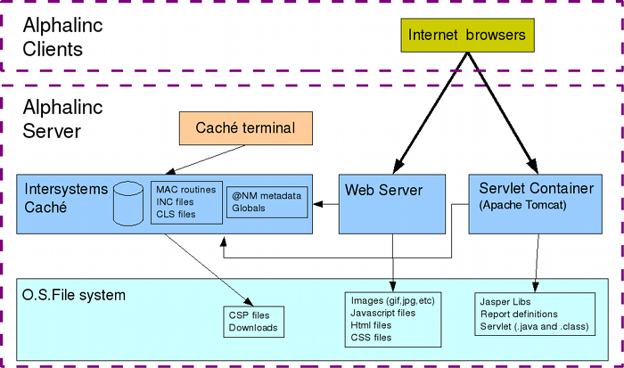
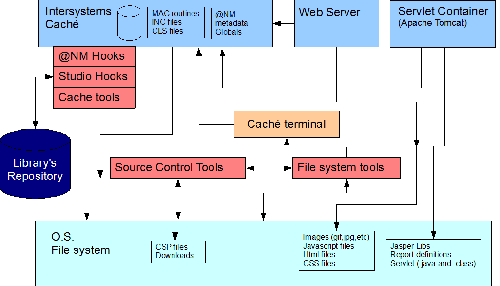
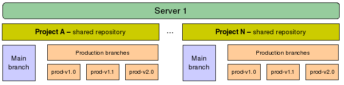
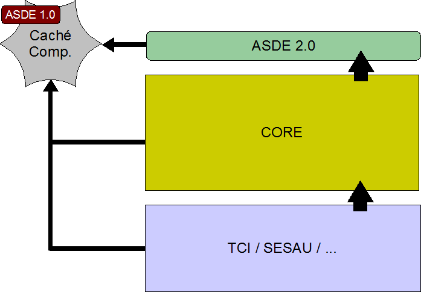
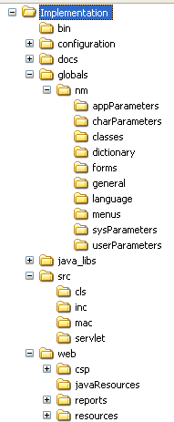
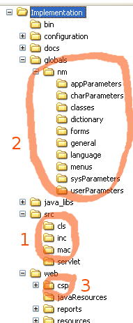

[Documentation Home]
Alphalinc Software Development Environment (ASDE) - Overview
Table of contents
- Introduction
- Alphalinc components
- Software Development environment components
- Source Control Repositories
- Repository's hierarchy and dependencies
- Workstation and Server environments
- A file view of Alphalinc
- Developer working cycle
- Migrating an existing namespace to ASDE
1 - Alphalinc Software Development Environment (ASDE) - Introduction
This document presents an overview of the Alphalinc Software Development Environment (ASDE).
It begins by showing all components, what each components does and, finally, what the user
is supposed to do.
The general purpose of a software development environment is to provide a set of integrated tools that
help developers collaborate and develop software together. A good software development environment
must provide:
- Source control of all artifacts - it must coordinate access to all artifacts that make up
the software (source files, form definitions, reports, scripts, images, etc) and make sure that every
developer has a valid (and recent) copy of artifacts to work with. It is also desirable that all changes are
kept in a history log and are easily accessed whenever desired.
- Easy deployment - it must be easy for the developer to deploy changes to the system in
order to test it. The tool should automate all tasks that are prone to human error, such as copying
files around.
- Integration of tools - the tools must work together in a consistent manner.
- Easy access to documentation - the developer must have access to all kinds of documentation.
System requirements, tools, help system, installation documentation, system documentation and so on.
- [NEW] Compatible with Caché 5, Caché 2008 and Ensemble
- [NEW] Run system installation scripts - a software development environment must be able to run installation scripts automatically.
These scripts may perform data maintenance, configuration tasks and environment setup related to a specific
project.
- [NEW] Work with libraries - it must be able to import and export libraries as packages of
artifacts controlled by ASDE.
ASDE's initial version was 1.0 and was used in the SES-DF project.
Its current version is 2.0 and it is being in the TCI project.
2 - Alphalinc components
It is important to understand Alphalinc. It is a complex piece of software
that makes use of different Caché services, some regular file system services, web server services and
also servlet container services. The user of Alphalinc usually interacts with the system through a web
browser. Developers interact by means of a Caché Terminal, a web browser, Caché's Studio and SQL manager,
as well as other Caché tools.

Figure 1 - Alphalinc's main components. The arrow means uses.
|
The figure 1 shows how Alphalinc components interact with each other. It also shows
where each type of artifact is stored: in the file system or inside Caché globals.
3 - Alphalinc Software Development Environment components
In order to use a source control version system, there is the need to store all artifacts
in the file system. The new Alphalinc Development Environment does that. The following figure
illustrates the components that belong to the Alphalinc Development Environment and are responsible
for exporting and importing artifacts to the file system as well as providing source control capabilities
and deployment procedures.

Figure 2 - Software Development Environment's components and Alphalinc.
The red boxes are responsible for managing all artifacts.
|
The main components of the Alphalinc Software Development Environment (ASDE) are:
- Studio Hooks - Studio hooks are a mechanism to have Caché Studio export every file that
is saved by the user within Studio. There is a package named SourceControl which has classes that manage
importing and exporting files from Studio/File System and also from globals.
- @NM Hooks - @NM Hooks are calls placed in all @NM forms that deal with editing @NM artifacts
(@Nm Classes, @NM Forms, @NM Menus, @NM Language texts, @NM Parameters, etc). Those calls make sure that
a @NM artifact is exported to the file system every time a developer adds, changes or deletes any component.
The calls are usually as follows:
do ##class(SourceControl.Exporter).ExportNMForm(formName)
do ##class(SourceControl.Exporter).ExportNMClass(className)
do ##class(SourceControl.Exporter).ExportNMMenu(menuName)
(...)
do ##class(SourceControl.Exporter).ExportNMArtifactByGlobal(globalReference)
- Cache tools - The package SourceControl has other classes besides SourceControl.Exporter.
These other classes manage the user SourceControl configuration, import and export of artifacts, directory
creation, filename identification, XML parsing, XML filtering and other services that are required for source
control.
- Source Control Tools - Source Control Tools are third-party, free software tools that provide source
control and graphical merging of regular files. Those tools are Bazaar
(a distributed version control system) and Winmerge (visual text file
differencing and merging tool for Windows).
- File System Tools - Since the source control tools only work with regular file system artifacts
(files and directories), the file system tools provide an interface between Caché and the file system. The file
systems tools are all controlled by an Apache ANT (a
powerful build tool) script (the script is the file build.xml, located at the project's root directory).
The ANT script controls many aspects of Alphalinc Software Development Environment:
- It checks what the current user-config.properties (the
location where the developer configures his or her own environment) are. It then applies those values to Caché
Globals, to generated batch files, generated terminal scripts and to internal ANT Script (build.xml)
properties.
- It checks whether there were any modifications in any of the templates, or in the build.xml script itself,
and regenerates all objects that depends on it. For example, if the user-config.template is updated,
ANT will ask the user to verify the changes before resuming its tasks.
- It
verifies if there is any kind of pending conflicts caused by the latest
run of the Bazaar update. For any conflict it finds, ANT tests if the
conflict is a text conflict. If positive, it executes winmerge on every
conflict file and lets the user make the needed changes. When the user
resolves existing conflicts, ANT asks the user to mark it as resolved,
not resolved or quit the system. If the conflict is not textual, a
message instructing the user how to solve the conflict is
displayed.
- It checks if any file in the SourceControl package has been modified. In that case, it asks the user to
close Studio and then it loads and compiles all those files into Cache.
- It checks all regular file system objects that were modified (images, CSP, javascritp, HTML files, etc)
and redeploys them to their correct places according to the current namespace configured in
user-config.properties. Resource files are copied to the resources directory. Caché routines,
classes, include files, @NM artifacts and globals are imported in Caché.
- It checks if Java source files were modified. It then compiles those files using the current libraries
and copies them to the Tomcat deployment directory. It also creates the Servlet deployment descriptors and
puts them into the correct places under Tomcat's directory. If any jasper report file was altered, it is also
copied to the correct target directory. It verifies if the jasper report libraries are up-to-date. If they
are not, the deployed libraries are replaced with the newest versions.
The ANT tool uses Caché Terminal scripts to store things in Caché. As a result, the user might see
terminal windows popup from time to time.
4 - Source Control Repositories
The source control part of Alphalinc Software Development Environment is provided by Bazaar.
Please take a moment to understand how it works and the concept of a Distributed Version Control Sytem by
visiting http://bazaar-vcs.org.
A note on terminology
It is very important to undertand what the following basic terms actually mean:
- Shared repository - a Bazaar shared repository is any folder created by issuing
a special Bazaar command. A shared repository contains one or more branches. It can be located on a network
drive, a local computer, a flash device or on the Internet. The general idea of a shared repository is that it
will hold related branches. All branches that have a common shared repository make operations between
them easier to the Bazaar tool, and thus, optimized.
- A branch
- a Bazaar branch is a folder where actual project files and
directories will be stored. When there needs to be more related
branches, it might be a good idea to place them all under shared
repositories. One can create a new empty branch by issuing a Bazaar
command. However, it is more usual to just create a copy (another
Bazaar command) of any existing branch to work on it. It doesn't matter
if the branch is on the server or if it is a copy of it in the local
user directory. All Bazaar commands work on branches.
- A working tree - a working tree is the place where you actually place the files inside a branch. it is
the regular folder structure you create when working with files. All control files used by Bazaar to
manage source control are kept in a separate place: the .bzr folder. This folder stores the complete project history.
The user must never change anything inside the .bzr
folder. In some situations, for example, in a shared repository that
will hold branches on a server, no one is expected to login to that
server and start working directly on the local files. Instead, one
can spare some space by requesting that the repository be created
without the working tree.
- To branch - create a copy of an existing branch. The copy is usually placed in a shared repository.
- To checkout - Be careful: it doesn't mean the same thing as the checkout command used by some
ancient source control tools, such as Visual Source Safe. To checkout means to get all initial files from a branch to
start working on it. A developer will issue the checkout only once in the whole lifecycle of that project.0
- To update - get all changes from the repository branch.
- To commit - send all the local changes to the repository branch.
- To merge - merge changes from a remote repository branch to the local branch.
For Alphalinc, the suggested structure is to establish a local shared repository for every project in every geographical
location or office. The branches on those repositories can be merged as desired. For simplicity and ease of use, it is
recommended that everybody use the centralized workflow until all teams are comfortable using the
source control.
The general repository organization is arranged in figure 3

Figure 3 - ASDE repository structure
|
Each server in the network can contain one or more shared repositories. Even users in the network
can have shared repositories to let other people collaborate. The recommended organization is to
create a new shared repository for every new project (it may be a client customization,
a new major revision, a different core implementation, an area for testing new ideas, etc).
Each repository can contain many Bazaar branches. It is good practice to have one main
development branch for each project and as many production branches as desired.
Let's look at Project A. It might be a project to deploy
Alphalinc to a Client A. Development starts on the main branch. At some point, it is decided that it is good for deployment. A new tag marks the set of files as
version 1.0 and a new branch is made (branch prod-v1.0). After that, the production server fetches all
files from the branch prod-v1.0 and goes live. The development then continues on the main branch towards
a next planned release.
The users or developers notice that a small change is necessary in production. However,
the main branch is not yet ready because that are new features and some of them are
still incomplete. The developer gets the files from the production branch prod-v1.0, finds
the bug, tests it locally and then commits it to the prod-v1.0 branch. The next step is to
deploy those files to production, by instructing the production server to update files from the
prod-v1.0 branch (updates always get the latest files, unless the user specifies which
version to get). Once a bugfix was done in the production branch, it should be merged back with
the main branch.
Another change was necessary in the production environment. A developer gets the files from the
prod-v1.0 branch, works on them, tests the system, and then commits. He also merges the fixes back
with the main branch. This happens again, when new changes are deployed.
The main development then reaches a stable state. The team decides to put another release into production.
They create a new tag (v1.1), a new branch (prod-v1.1) and deploy them to the
production server. Once all previous bug fixes have already been merged back, the team is confident that
the system will work as planned.
The cycle described above can go on and on. There are still other
possibilities. For example, a group of developers might make a
temporary copy of the main branch to work on other ideas and after a
few days merge the work back with the main branch.
5 - Repository's hierarchy and dependencies
Every Bazaar repository can be created as a child branch from another one. This feature is used extensively
in ASDE.
First of all, ASDE uses many routines that are common to other projects. So, ASDE is dependent
on the CacheComponents repository (maintained by an old version of ASDE 1.0).
Besides that, ASDE serves as the primary repository for all projects that use ASDE. This is something necessary to
keep things simple. If one needs to apply a change on ASDE, it will be done in only one place. We
will usually have an intermediary repository for the Core layer (WWW, COM, IN, ...). Finally, we will have each
project as the final level in the hierarchy, with all the Customizations (VAR) and specific behavior or
functions.

Figure 4 - Repository's hierarchy and dependencies. The big arrow means inherits from
and the small arrow means depends on
|
The figure 4 shows how Bazaar Repositories interact with each other. It also shows
where each type of module is stored: Caché basic functionality, ASDE, Core and Customizations.
6 - Workstation and Server environments
There are two kinds of ASDE environments: the Server Environment and the Workstation Environment.
- Server Environment - servers in the ASDE only store Bazaar repositories with branches.
It is possible to configure an ASDE repository even without installing the Bazaar tool in the server
(shared folders would be one way of doing that). However, for the best network and system performance,
it is recommended that Bazaar be installed in the server as a service (wgucg is called bzr smart server).
Please observe that the server repositories share nothing with server namespaces. In the server environment,
installed namespaces and repositories are not related at all. Repositories don't interfere or
suffer interference from namespaces in the server.
The folder structure inside the server is usually just a folder named repositories with
as many subfolders as necessary to hold all projects. Nobody touches those folders, except for
BZR and backup tools.
- Workstation Environment - this is the environment each developer must install in his or her
workstation. This means that all software tools must be installed and setup properly. There are three
items that are closely related for the workstation environment:
- One or more project folders - for each project, there is a folder the developer
needs to work with. Each folder is the workspace for the developer. He or she can change any files,
rename them and create new ones. They can be images, reports, javascript, java servlet, CSP files,
documentation, etc. This is also the place where all @NM artifacts and Studio files get exported
to when the user saves them (of course, if the Studio is open on namespace X those files get exported to
the X folder).
When ANT is called on the Implementation folder inside a project folder, a number of transformations
are done on the files and, then, they are either copied to the deployment folders or imported into
the related Caché Namespace.
- Deployment folders - there should be one deployment folder for each related project and namespace.
Each of those folders contains the namespace database and all files that namespace needs to work properly. It is
very important to note that nobody should touch anything in the deployment directories. Only
the ASDE tools will deploy files to those places. IIS, Caché and Tomcat will also serve files that are located
there. However, the developer never changes anything there manually. ANT is the tool that does that when
needed and in an automatic manner.
- Caché namespaces - there should be one Caché namespace for each related project. Since the tools
can't create that namespace automatically yet, the developer must create them when needed, by following the
installation instructions.
It is important to note that only the local developer
(the person sitting at the computer) should work with each of the local
namespaces. Each developer must have his or her own copy of each
project and related namespace in his or her workstation. The only way a
developer gets or sends changes to/from other developers is by using
the appropriate bazaar commands (probably "bzr update" and "bzr
commit").
At each ANT run, all recently changed files will be imported into Caché or deployed to the related deployment folder.
7 - A file view of Alphalinc
Since every artifact in Alphalinc is kept on the file system, it is important to know where they are.
Take a look at the folder structure of a typical project:
|

|
- bin - executables needed by the system
- configuration - internal system configuration files
- docs - documentation for the source control and build system
- globals\nm - @NM artifacts
- java_libs - Java libraries needed for servlet compilation and deployment
- src\cls - Source files for Caché classes
- src\inc - Source files for Caché include definitions
- src\mac - Source files for Caché mac routines
- src\servlet - Source files for the reports java servlet
- web\csp - Caché csp files
- web\javaResources - files used during the servlet deployment
- web\reports - jasper report files (generated by iReport)
- web\resources - static files used by Alphalinc (images, html, javscript, etc)
|
|
Figure 5 - Alphalinc artifacts
|
Among all Alphalinc artifacts managed by ASDE, there are three kinds
that are special: @NM artifacts, Caché source code and
CSP files. They are special because they are usually stored inside the
Caché Database, as globals. Because of that, ASDE uses hooks that
export them whenever the developer saves them. To export an artifact
means to transform it into something that can be put
into the regular file system. Depending on its kind, an artifact may
have a slight different file system representation than the others.
Please take a look at the main kinds of artifacts:
|

|
- Caché source code - There is a hook that is installed in Studio
whenever the developer runs ant. Every time a CLS, MAC or INC file is saved, that file is exported as a XML file and placed
on the corresponding src/cls, src/mac, src/inc or src/prj folder. Although prj files are not source files, they are still
exported to the src/prj folder because they are very related to source files
- @NM artifacts - The hooks installed in WWWSPEI.mac, User.www.cls, WWWKILL.mac,
WWW001OO.MAC and WWWLNG1.MAC guarantee that anytime the developer saves a @NM artifact, it gets exported to the file system,
under the folder globals/nm. ASDE creates a text file with all the global nodes described. It is also very different from
the other Alphalinc tools because it doesn't use escape characters. Moreover, each piece is placed on a different line.
It is important to note that not all @NM artifacts
gets exported to a different file. All things that belong to a parent
artifact gets exported with the parent. For example, when you edit a
field in a @NM Form and then saves it, the parent FORM will be exported
(which will include that field definition).
- CSP files
- CSP files are just regular text files that Studio can edit. The
hooks, in this case, just copy that CSP file to your project directory,
when you edit it and then save it with Studio. If you want to edit the
CSP
file using another editor, just edit it normally, under the project
folder.
|
|
Figure 6 - the three main kinds of special Alphalinc artifacts
|
About the file names for exported artifacts
All file names that hold @NM artifacts or Caché source files use the following naming algorithm:
- Take the original artifact's full name (including spaces, dashes, accented characters, punctuation marks, etc);
- Calculate the CRC-16 checksum on that original name;
- Replace each non-alphanumerical character with a dash ("-");
- Replace each accented character with its non accented version (according to the Umlau table);
- Append a dash and the calculated CRC-16 code to that string;
- Add the appropriate extension (.nmclass, .form, .menu, etc)
That procedure is very important because:
- It can save any artifact without having issues with file system naming restrictions;
- The final file name is a reasonable approximation of the original artifact name, thus it is easy to find;
For example, the ÄNDERUNG system parameter (^WWW100(0,"ÄNDERUNG")) gets mapped to the file aeNDERUNG-5652.parameters;
- The CRC16 code guarantees that there are no name clashes. For
example, the globals "www" and "WWW" will be represented as different
file names.
8 - Developer working cycle
Please refer to the Using the tools document.
9 - Migrating an existing namespace to ASDE
When a namespace is not currently under version control and does not use the ASDE tool set yet,
it must go through the migration process once.
Please refer to the namespace migration document.
This document is the file projectDirectory/Implementation/docs/overview/index.html
Please feel free to make corrections and commit it to the repository.